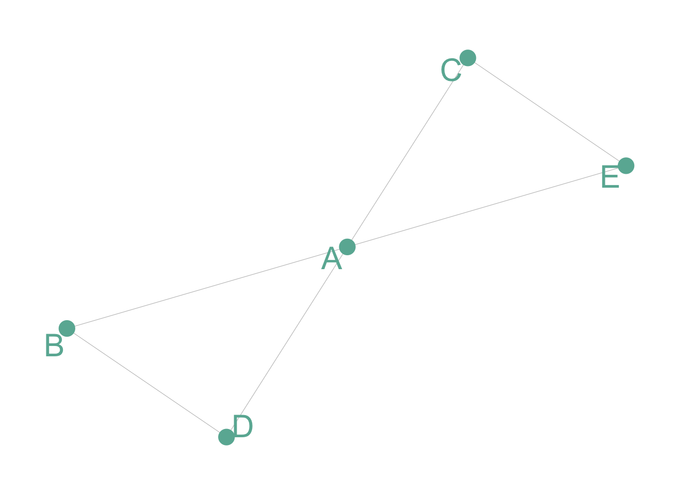
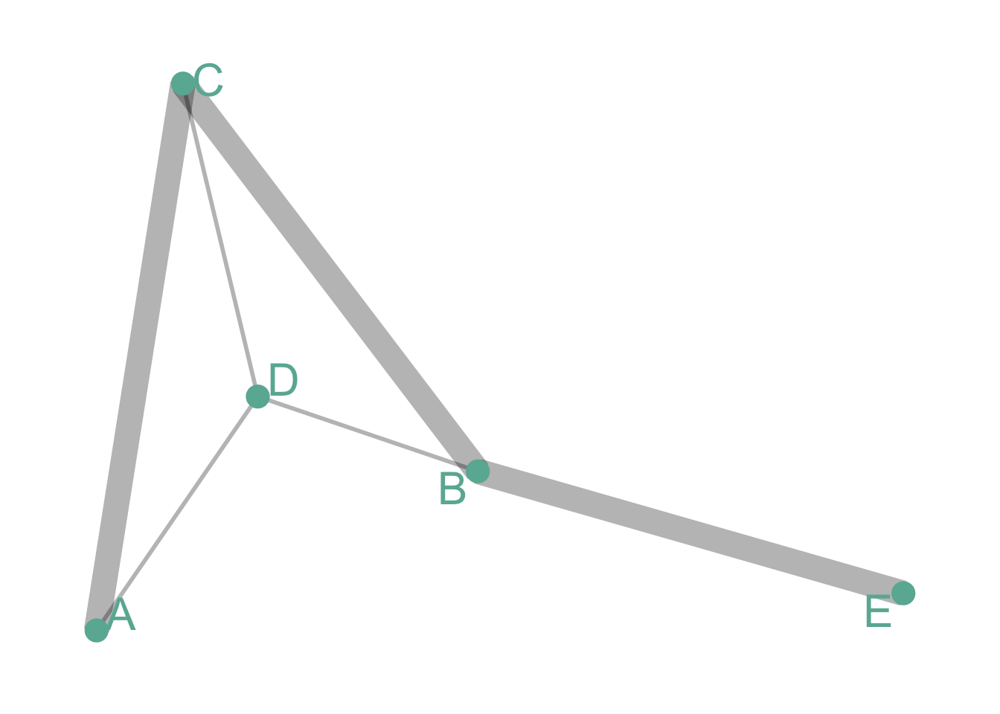
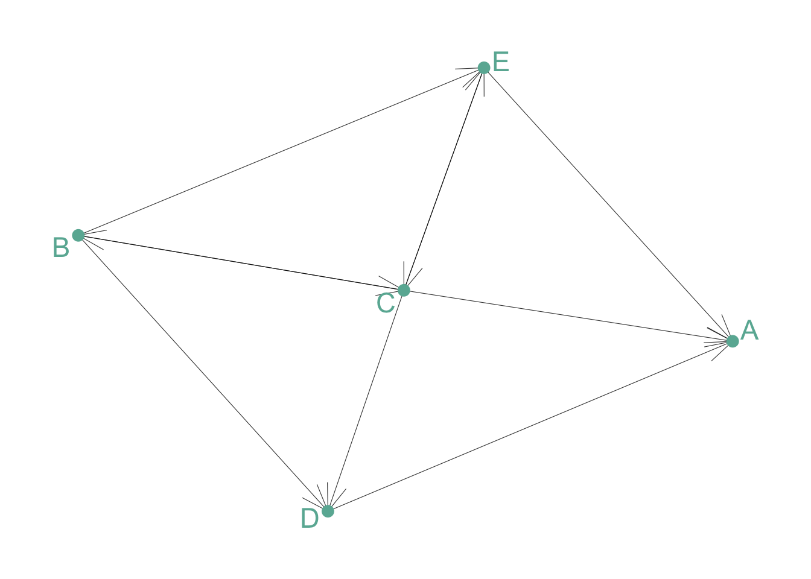
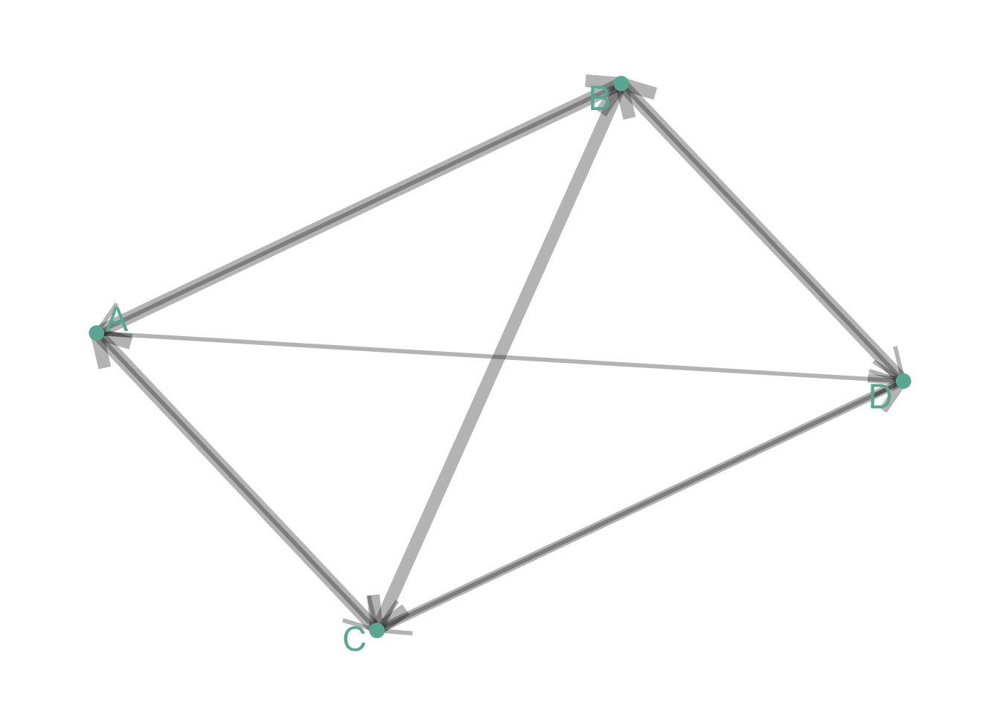
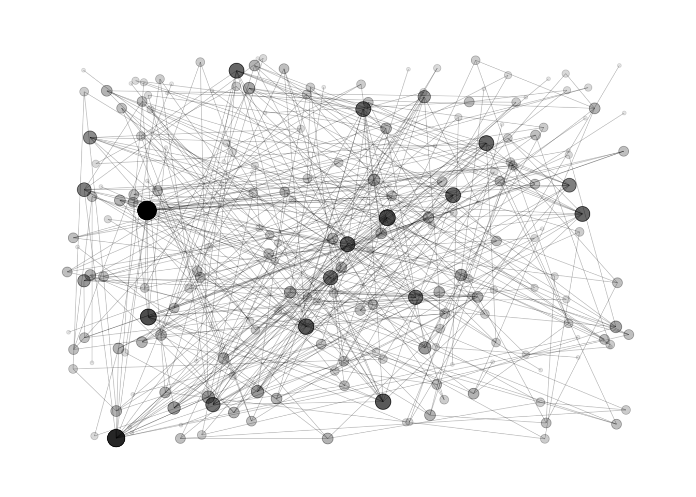

Network diagram
definition - mistake - related - code
Network diagrams (also called Graphs) show
interconnections between a set of entities. Each entity is represented
by a Node (or vertice). Connections between nodes are
represented through links (or edges).
Here is an example showing the co-authors network of Vincent Ranwez, a researcher who’s my previous supervisor. Basically, people having published at least one research paper with him are represented by a node. If two people have been listed on the same publication at least once, they are connected by a link.
# Libraries
library(tidyverse)
library(viridis)
library(patchwork)
library(hrbrthemes)
library(ggraph)
library(igraph)
library(networkD3)
# Load researcher data
dataUU <- read.table("https://raw.githubusercontent.com/holtzy/data_to_viz/master/Example_dataset/13_AdjacencyUndirectedUnweighted.csv", header=TRUE)
# Transform the adjacency matrix in a long format
connect <- dataUU %>%
gather(key="to", value="value", -1) %>%
na.omit()
# Number of connection per person
c(as.character(connect$from), as.character(connect$to)) %>%
as_tibble() %>%
group_by(value) %>%
summarize(n=n()) -> coauth
colnames(coauth) <- c("name", "n")
# NetworkD3 format
graph <- simpleNetwork(connect)
# Plot
simpleNetwork(connect,
Source = 1, # column number of source
Target = 2, # column number of target
height = 880, # height of frame area in pixels
width = 1980,
linkDistance = 10, # distance between node. Increase this value to have more space between nodes
charge = -4, # numeric value indicating either the strength of the node repulsion (negative value) or attraction (positive value)
fontSize = 5, # size of the node names
fontFamily = "serif", # font og node names
linkColour = "#666", # colour of edges, MUST be a common colour for the whole graph
nodeColour = "#69b3a2", # colour of nodes, MUST be a common colour for the whole graph
opacity = 0.9, # opacity of nodes. 0=transparent. 1=no transparency
zoom = T # Can you zoom on the figure?
)Note: This chart is interactive: zoom on a
specific cluster to see researcher names. Data have been retrieved using
the scholar package,
the pipeline is describe in this github
repository. You can read more about this story here.
Four main types of network diagram exist, according to the features
of data inputs. Here is a short description.
Undirected and Unweighted
Tom, Cherelle and Melanie live in the same house. They are connected but no direction and no weight.
# Create data
set.seed(2)
data <- matrix(sample(0:1, 25, replace=TRUE), nrow=5)
data[lower.tri(data)] <- NA
rownames(data) <- LETTERS[1:5]
colnames(data) <- LETTERS[1:5]
# Transform it in a graph format
network <- graph_from_adjacency_matrix(data)
# Make the graph
ggraph(network) +
geom_edge_link(edge_colour="black", edge_alpha=0.3, edge_width=0.2) +
geom_node_point( color="#69b3a2", size=5) +
geom_node_text( aes(label=name), repel = TRUE, size=8, color="#69b3a2") +
theme_void() +
theme(
legend.position="none",
plot.margin=unit(rep(1,4), "cm")
)
Undirected and Weighted
In the previous co-authors network, people are connected if they published a scientific paper together. The weight is the number of time it happend.
# Create data
set.seed(1)
data <- matrix(sample(0:3, 25, replace=TRUE), nrow=5)
data[lower.tri(data)] <- NA
rownames(data) <- LETTERS[1:5]
colnames(data) <- LETTERS[1:5]
# Transform it in a graph format
network <- graph_from_adjacency_matrix(data, weighted = TRUE)
# Remove edges with NA weights
network <- delete_edges(network, E(network)[is.na(E(network)$weight)])
# Make the graph
ggraph(network) +
geom_edge_link(aes(edge_width=E(network)$weight), edge_colour="black", edge_alpha=0.3) +
geom_node_point(color="#69b3a2", size=5) +
geom_node_text(aes(label=name), repel = TRUE, size=8, color="#69b3a2") +
theme_void() +
theme(
legend.position="none",
plot.margin=unit(rep(1,4), "cm")
)
Directed and Unweighted
Tom follows Shirley on twitter, but the opposite is not necessarily true. The connection is unweighted: just connected or not.
# Create data
set.seed(10)
data <- matrix(sample(0:1, 25, replace=TRUE), nrow=5)
diag(data) = NA
rownames(data) <- LETTERS[1:5]
colnames(data) <- LETTERS[1:5]
# Transform it in a graph format
network <- graph_from_adjacency_matrix(data)
# Make the graph
ggraph(network) +
geom_edge_link(edge_colour="black", edge_alpha=0.8, edge_width=0.2, arrow = arrow(angle=20)) +
geom_node_point( color="#69b3a2", size=3) +
geom_node_text( aes(label=name), repel = TRUE, size=6, color="#69b3a2") +
theme_void() +
theme(
legend.position="none",
plot.margin=unit(rep(1,4), "cm")
)
Directed and Weighted
People migrate from a country to another: the weight is the number of people, the direction is the destination.
# Create data
set.seed(11)
data <- matrix(sample(0:3, 16, replace=TRUE), nrow=4)
diag(data) <- NA
rownames(data) <- LETTERS[1:4]
colnames(data) <- LETTERS[1:4]
# Transform it in a graph format
network=graph_from_adjacency_matrix(data, weighted=TRUE)
# Remove edges with NA weights
network <- delete_edges(network, E(network)[is.na(E(network)$weight)])
# Make the graph
ggraph(network) +
geom_edge_link(edge_colour="black", edge_alpha=0.3, aes(edge_width=E(network)$weight) , arrow=arrow()) +
scale_edge_width(range=c(1,3)) +
geom_node_point( color="#69b3a2", size=3) +
geom_node_text( aes(label=name), repel = TRUE, size=6, color="#69b3a2") +
theme_void() +
theme(
legend.position="none",
plot.margin=unit(rep(1,4), "cm")
)
Note: as you can observe on the examples above, directed graphs are quite hard to represent using this type of visualization. More appropriate techniques exist to represent flows, like Sankey diagram or chord diagram.
Many customizations are available for network diagrams. Here are a few features you can work on to improve your graphic:
Adding information to the node: you can add more insight to the graphic by customizing the color, the shape or the size of each node according to other variables.
Different layout algorythm: finding the most optimal
position for each node is a tricky exercise that highly impacts the
output. Several algorithms have been developped, and choosing the right
one for your data is a crucial step. See this page for a list of
the most common algorithm. Here is an example illustrating the
differences between three options:
Fruchterman-Reingold
Probably the most widely used algorithm, using a force-directed method.
# Load researcher data
dataUU <- read.table("https://raw.githubusercontent.com/holtzy/data_to_viz/master/Example_dataset/13_AdjacencyUndirectedUnweighted.csv", header=TRUE)
# Transform the adjacency matrix in a long format
connect <- dataUU %>%
gather(key="to", value="value", -1) %>%
na.omit()
# Number of connection per person
c( as.character(connect$from), as.character(connect$to)) %>%
as.tibble() %>%
group_by(value) %>%
summarize(n=n()) -> coauth
colnames(coauth) <- c("name", "n")
# Create a graph object with igraph
mygraph <- graph_from_data_frame( connect, vertices = coauth )
# Make the graph
ggraph(mygraph, layout="fr") +
#geom_edge_density(edge_fill="#69b3a2") +
geom_edge_link(edge_colour="black", edge_alpha=0.2, edge_width=0.3) +
geom_node_point(aes(size=n, alpha=n)) +
theme_void() +
theme(
legend.position="none",
plot.margin=unit(rep(1,4), "cm")
)DrL
A force-directed graph layout toolbox focused on real-world large-scale graphs
# Make the graph
ggraph(mygraph, layout="drl") +
#geom_edge_density(edge_fill="#69b3a2") +
geom_edge_link(edge_colour="black", edge_alpha=0.2, edge_width=0.3) +
geom_node_point(aes(size=n, alpha=n)) +
theme_void() +
theme(
legend.position="none",
plot.margin=unit(rep(1,4), "cm")
)
Randomly
This is what happens if node positions is set up randomly
ggraph(mygraph, layout="igraph", algorithm="randomly") +
#geom_edge_density(edge_fill="#69b3a2") +
geom_edge_link(edge_colour="black", edge_alpha=0.2, edge_width=0.3) +
geom_node_point(aes(size=n, alpha=n)) +
theme_void() +
theme(
legend.position="none",
plot.margin=unit(rep(1,4), "cm")
)
Hairball is the main caveat when ploting networks: when
too many connections and no obivious pattern is represented, the figure
get cluttered and unreadable.
Data To Viz is a comprehensive classification of chart types organized by data input format. Get a high-resolution version of our decision tree delivered to your inbox now!

A work by Yan Holtz for data-to-viz.com